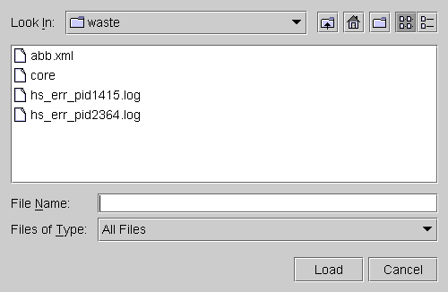

Load Datalog...
The Load Datalog menu item enables you to select a log file created by the Event Datalog function.
Data log is a test method program. You can log captured and reference waveforms as well as calculated data, such as the results of FFT, INL, and DNL calculations.
A typical data log screen is shown below.
After loading a data log file, the data contained in that file can be graphically displayed.
The Load Datalog function provides a browser where you can select a file. The default directory is the current "device/mix_sgnl" directory.

Data log files are identified by the filename suffix ".str".
Once you have loaded a data log file, you can click the Select Waveform button to open that file and to choose the waveforms to be displayed. See Select Waveform....